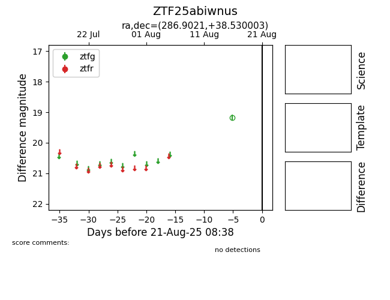

Target ZTF25abiwnus at 2025-08-21 08:38, see:
FINK: fink-portal.org/ZTF25abiwnus
Lasair: lasair-ztf.lsst.ac.uk/objects/ZTF25abiwnus
ALeRCE: alerce.online/object/ZTF25abiwnus
alt names
ZTF25abiwnus (ztf,alerce)
coordinates:
equatorial (ra, dec) = (286.9021,+38.53000)
galactic (l, b) = (69.5326,+13.58929)
photometry
